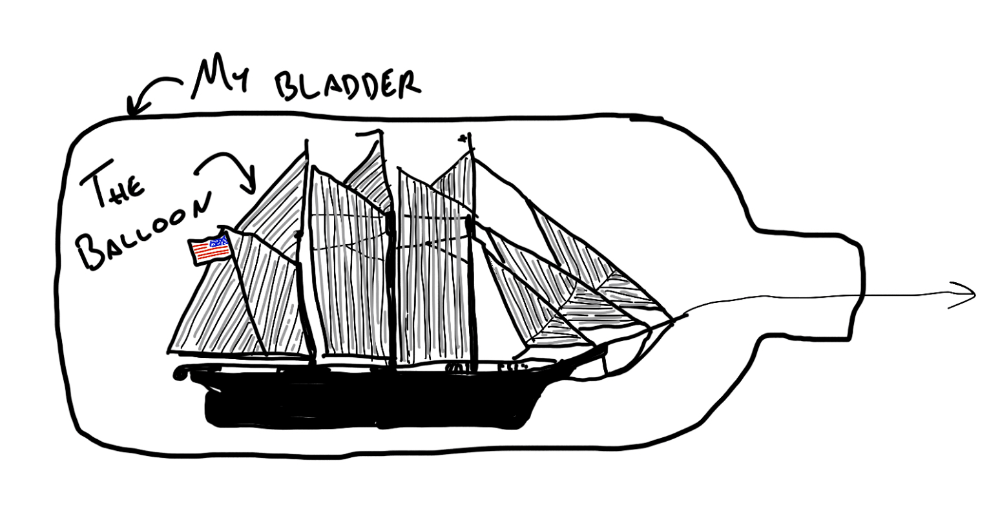
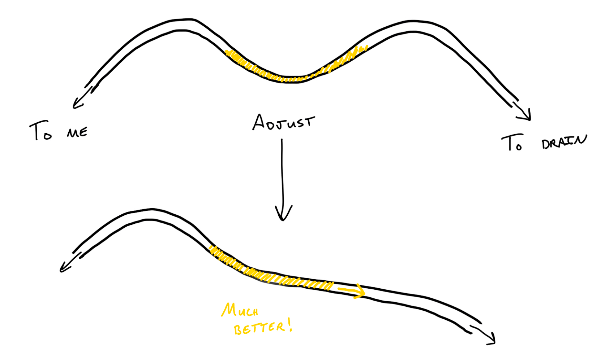

Cathy: my dear, helpful catheter
Nov 9, 2025 · 931 words · 5 minutes read
Listen, there isn’t much in this world that’s as luxurious as being able to pee whenever you want to. Imagine floating in the ocean, free at the drop of a hat, except it’s anywhere. A simple luxury, but a freeing one. Or, at least it would be, if you weren’t confined to a hospital bed.
I’m talking, of course, about wearing a Foley catheter.
The only small downside to this absolute luxury is having a tube constantly down your urethra. You notice it constantly; every slight repositioning of your legs means a gentle, calming, pulling sensation as if your bladder was being pulled out the long way, with extra friction the whole way out.
Funny enough, that’s also how it stays in there. Theres a little balloon at the end that gets inflated once it has made its way all the way to your bladder. Like a ship in a bottle, it’ll stay in place, resisting being tugged.

And tugged it was. Mine was the plain old gravity version, which meant that the drainage would slowly make its way out, helped by the general downhill slope of the tubing, but occasionally, one of the nurses would have to adjust it to help it on its way.

No matter — what’s a slight, uncomfortable tugging among friends? It was far from the most uncomfortable thing I was going through at the time, and unlike some of hte other sensations, at least it was pretty predictable.
Predictable, at least, while I was awake.
There are many terrible ways to wake up in this life. Fire alarms and the smell of smoke is one, or maybe waking up to the sound of a kid or pet about to vomit. I’d like to offer another for consideration: the catheter tug.
Sitting in my hospital bed, I must have dozed off at some point during a lull in activity, having not been sleeping well, because I was suddenly brought crashing back to this conscious realm by a well intentioned nurse adjusting my catheter to help it drain. There’s something so guttural about being pulled from the inside out, and the sensation shocked me awake faster than any coffee ever could. A mix of adrenaline, shock, and friction, especially in so private an area, immediately took my full attention, easily beating out any oxy fever dream I might have been briefly entertaining.
If you’ve ever struggled to wake up to your first alarm, then I’ve got the perfect product for you!
As time went on, as convenient as it was, I was looking forward to not having my catheter in any more. We had been through some difficult times together, and she (Cathy) had been a great convenience, but I knew these times couldn’t last.
I was not, however, looking forward to the removal. Though directionally it aligned better with the usual direction of flow that I’m used to down there (thank god I was out when it was inserted), I knew it wasn’t going to be pleasant.
If you somehow got access to my 3AM oxy-and-insomnia-fueled googlings in the early morning of the 26th, you’d see “hwo are foly cathetrs removed”, quickly autocorrected and answered by Google. It’s the opposite order: deflate the balloon, then pull it on out. The nurse was honest, and she was kind. She told me it was going to be brief, but uncomfortable.
It was both.
But, then it was done. While still smarting, I realized that for the first time in days, I could cross my legs without that telltale tugging sensation. I immediately stretched my legs with a huge feeling of relief, like the first time you’re able to stretch after a long flight in the middle seat. Only you hadn’t been in the middle seat — you were in a hospital bed (and sometimes a recliner) with a tube all the way in you.
Having it out made standing, sitting, and moving so much easier. I still had my drainage tubes and pacemaker wires going in through my belly, but it was a relieving improvement and a great step in the recovery process. My entire process was a series of these incremental steps, each a small action, though they each felt huge, and each victory brought me one step closer to discharge, to getting home, and to getting better. It made the process a series of gradual improvements that helped harden my resolve and make me readier for the next step — I made it through that part, crossing it off my list, and now I can move on to the ever reducing list of next steps.
Afterward, my nurse gave me a portable urinal and told me I had to pee on my own within six hours before they’d start to worry. I’ve never been one to shy away from a challenge, and armed with my resolve and newly found mobility freedom, I took it in stride, making my way through a couple cups of ice water. The urinal was awkward at first, and I’m sure the office workers in the building across from my window saw more than they had bargained for, but we made it work and were home free. Or, if not home free, at least free to move on with everything else I had to do, free from any of those eyebrow raising tugs.
But, I’ll never forget the sensations, especially that wake up call. And that’s why, Sharks, I’d like to return to my alarm clock idea, and with an initial investment for 10% of the company…